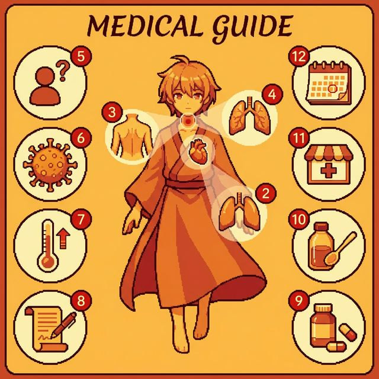
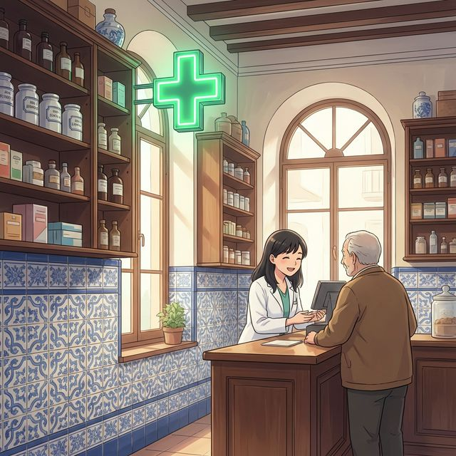

Cervantes: §1 Identidad: 심화된 신체 특징 묘사, §13 Salud: 건강 관련 문제, 질병 및 생활 습관 표현
학습 목표:
- 복잡한 신체 부위와 장기, 그리고 세부적인 건강 상태를 설명할 수 있습니다.
- doler(아프다) 동사와 간접 목적 대명사의 결합을 마스터하여 통증을 정확히 표현합니다.
- 스페인의 약국 문화와 자가 진단 및 처방에 대한 문화적 에티켓을 익힙니다.
- 병원 예약 및 약국에서의 심화 상담 시나리오를 수행할 수 있습니다.
¿Sabías que...? (알고 계셨나요?)
스페인의 약국(Farmacia)은 단순히 약을 파는 곳을 넘어, 가벼운 증상에 대해 전문적인 조언을 해주는 '준의료기관' 역할을 합니다. 밤늦게나 공휴일에도 당번 약국인 'Farmacia de guardia'가 항상 열려 있어 시민들의 건강을 책임집니다.
A2 수준의 심화 건강 관련 어휘입니다. 일러스트의 상세 부위를 확인해보세요.

| 번호 | Spanish | English Bridge | Korean Tip |
|---|---|---|---|
| 1 | el corazón | Cordial (→ heart-related) ✅ | 심장입니다. |
| 2 | los pulmones | Pulmonary ✅ | 폐입니다. |
| 3 | la espalda | — | 등, 허리입니다. |
| 4 | la garganta | — | 목구멍, 인후입니다. |
| 5 | el síntoma | Symptom ✅ | 증상입니다. |
| 6 | la gripe | Grippe (archaic English for flu) | 독감입니다. |
| 7 | la fiebre | Fever ✅ | 열입니다. |
| 8 | la receta | Recipe ✅ (→ prescription/formula) | 처방전입니다. |
| 9 | la pastilla | Pastille (→ lozenge/pill) | 알약입니다. |
| 10 | el jarabe | — | 시럽(시럽 형태의 약)입니다. |
| 11 | la farmacia | Pharmacy ✅ | 약국입니다. |
| 12 | la cita médica | — | 병원 예약입니다. |
✅ 범례: ✅ 표시된 단어는 영어와 어원이 같거나 매우 유사한 'Cognates'입니다.
병원과 약국에서 사용하는 세부적인 표현들입니다.
A. 통증 및 증상 상세 설명
- ¿Qué le pasa? (What's wrong? / 어디가 편치 않으신가요?)
- Me duele mucho la espalda. (My back hurts a lot. / 허리가 너무 아파요.)
- Tengo una fiebre muy alta. (I have a very high fever. / 열이 아주 높아요.)
- Tengo alergia al polen. (I'm allergic to pollen. / 꽃가루 알레르기가 있어요.)
B. 약국에서 사용하기
- ¿Tiene algo para la tos? (Do you have something for the cough? / 기침에 좋은 약이 있나요?)
- Quiero este medicamento con receta. (I want this medicine with a prescription. / 처방전이 있는 이 약을 사고 싶어요.)
- ¿Cuántas veces al día debo tomarlo? (How many times a day should I take it? / 하루에 몇 번 먹어야 하나요?)
doler 동사는 gustar(좋아하다) 동사와 동일한 구조를 가집니다. 즉, '내가 주어'가 아니라 '아픈 부위가 주어'가 됩니다.
[간접 목적 대명사] + duele/duelen + [아픈 신체 부위]
| 간접 목적 대명사 | 설명 |
|---|---|
| me | 나에게 (내 ~가 아프다) |
| te | 너에게 |
| le | 그/그녀/당신에게 |
| nos | 우리에게 |
| os | 너희에게 |
| les | 그들/그녀들/당신들에게 |
Korean Tip!
한국어로는 "나는 머리가 아파"라고 내가 주어인 것처럼 말하지만, 스페인어에서는 "나에게 머리가 통증을 준다"는 식의 역구조 동사임을 명심하세요. 영어의 "My head hurts"와 구조적으로 더 유사합니다.

En España, las farmacias son instituciones muy respetadas. Los farmacéuticos tienen una formación académica rigurosa y a menudo actúan como el primer punto de contacto para consultas de salud menores. A diferencia de otros países, no se puede comprar medicamentos fuertes sin una receta médica oficial de un profesional de la Seguridad Social o de una clínica privada.
La cultura de la automedicación está controlada. Para problemas comunes como resfriados o dolores leves, el farmacéutico puede recomendar medicamentos de venta libre. Un detalle importante es la Farmacia de Guardia: cada municipio tiene un calendario para asegurar que al menos una farmacia esté abierta las 24 horas. Si estás en España y necesitas medicinas por la noche, solo tienes que buscar en internet o en la puerta de cualquier farmacia el cartel de "Guardia".
[한국어 번역]
스페인에서 약국은 매우 존경받는 기관입니다. 약사들은 엄격한 학술 교육을 받았으며 종종 가벼운 건강 상담의 첫 번째 접점 역할을 합니다. 다른 국가들과 달리, 사회 보장 제도나 사립 클리닉의 공식 처방전 없이는 강력한 약물을 구매할 수 없습니다.
자가 처방 문화는 엄격히 관리됩니다. 감기나 가벼운 통증 같은 일반적인 문제에 대해서는 약사가 일반 의약품(OTC)을 추천할 수 있습니다. 중요한 디테일 중 하나는 당번 약국(Farmacia de Guardia)입니다. 모든 지자체는 최소 한 곳의 약국이 24시간 문을 열도록 일정을 관리합니다. 만약 스페인에서 밤에 약이 필요하다면, 인터넷을 검색하거나 약국 문에 붙은 "Guardia(당번)" 공고를 확인하면 됩니다.
A. Match the word (알맞은 단어를 연결하세요)
| Spanish | English / Korean |
|---|---|
| 1. Corazón | a. Fever |
| 2. Fiebre | b. Prescription |
| 3. Jarabe | c. Heart |
| 4. Receta | d. Cold (Flu) |
| 5. Gripe | e. Syrup |
B. Choose the correct form: duele or duelen (duele 또는 duelen 중 알맞은 것을 고르세요)
C. 번역 연습 (스페인어로 번역하세요)
Una visita inesperada al médico (예상치 못한 병원 방문)
El invierno en Madrid es muy frío y mucha gente tiene la gripe. Ayer, Elena se levantó con mucha fiebre y dolor de garganta. Ella llamó al Centro de Salud para pedir una cita médica. El doctor la examinó y le dijo: "Tienes una infección leve". El doctor le dio una receta para un jarabe y unas pastillas. Elena fue a la farmacia de su barrio y compró los medicamentos. Ahora tiene que descansar en casa por tres días.
Questions:
1. ¿Por qué Elena pidió una cita médica? (엘레나는 왜 병원 예약을 했나요?)
- ............................................................
2. ¿Qué compró Elena en la farmacia? (엘레나는 약국에서 무엇을 샀나요?)
- ............................................................
[한국어 번역]
마드리드의 겨울은 매우 춥고 많은 사람이 독감에 걸립니다. 어제 엘레나는 높은 열과 목 통증을 느끼며 일어났습니다. 그녀는 보건소에 전화를 걸어 병원 예약을 했습니다. 의사는 그녀를 진찰하고 "가벼운 감염이 있습니다"라고 말했습니다. 의사는 그녀에게 시럽과 알약 처방전을 주었습니다. 엘레나는 동네 약국에 가서 약을 샀습니다. 이제 그녀는 집에서 3일 동안 쉬어야 합니다.
En la farmacia (약국에서)
Situación: Sofía tiene un fuerte resfriado y entra en una farmacia en Sevilla para comprar algo que la ayude. Habla con el farmacéutico sobre sus síntomas y pide recomendaciones.
상황: 소피아는 심한 감기에 걸려 이를 치료할 약을 사러 세비야의 한 약국에 들어갑니다. 그녀는 약사에게 자신의 증상을 설명하고 약을 추천받습니다.
| Spanish | Korean |
|---|---|
| Farmacéutico: Hola, buenas tardes. ¿En qué puedo ayudarla? | 약사: 안녕하세요, 좋은 오후입니다. 무엇을 도와드릴까요? |
| Sofía: Hola. Tengo un resfriado muy fuerte. | 소피아: 안녕하세요. 감기가 아주 심하게 걸렸어요. |
| Farmacéutico: ¿Cuáles son sus síntomas? | 약사: 증상이 어떠신가요? |
| Sofía: Me duele la garganta y tengo un poco de fiebre. | 소피아: 목이 아프고 열이 약간 있어요. |
| Farmacéutico: ¿Tiene tos también? | 약사: 기침도 하시나요? |
| Sofía: Sí, tengo mucha tos, sobre todo por la noche. | 소피아: 네, 특히 밤에 기침을 많이 해요. |
| Farmacéutico: Le recomiendo este jarabe para la tos y estas pastillas para el dolor. | 약사: 이 기침 시럽과 통증 완화 알약을 추천해 드립니다. |
| Sofía: ¿Cómo debo tomarlos? | 소피아: 어떻게 복용해야 하나요? |
| Farmacéutico: Tome el jarabe cada ocho horas y una pastilla antes de dormir. | 약사: 시럽은 8시간마다 드시고, 알약은 자기 전에 한 알 드세요. |
| Sofía: Muchas gracias por su ayuda. | 소피아: 도와주셔서 정말 감사합니다. |
이번 장에서 배운 핵심 내용을 확인해보세요.
doler 동사의 역구조(me duele/duelen)를 문법적으로 이해했나요?cita médica)과 처방전(receta) 관련 표현을 사용할 수 있나요?Farmacia de Guardia) 시스템과 상담 문화를 이해했나요?잘하셨습니다! A2 수준으로 넘어오면서 더 복잡한 신체 기관과 상세한 통증 표현법을 배웠습니다. 특히 doler 동사는 스페인어 특유의 역구조 동사 중 하나이므로, gustar와 함께 충분히 연습하는 것이 중요합니다. 건강은 언어 학습 못지않게 중요하니 항상 몸 관리 잘하세요. ¡Salud y mucha suerte! (건강과 행운을 빕니다!)
6. Práctica - A. Match the word
1-c, 2-a, 3-e, 4-b, 5-d
6. Práctica - B. Fill in the blanks (Choose duele/duelen)
1. duelen, 2. duele, 3. duelen, 4. duele, 5. duele
6. Práctica - C. 번역 연습
1. Me duelen los ojos.
2. ¿Tienes la gripe?
3. Quiero un jarabe para la tos.
4. Tenemos una cita médica.
5. Ella tiene alergia a los medicamentos.
7. Lectura Questions
1. Elena pidió una cita médica porque tenía fiebre y dolor de garganta.
2. Elena compró un jarabe y unas pastillas.